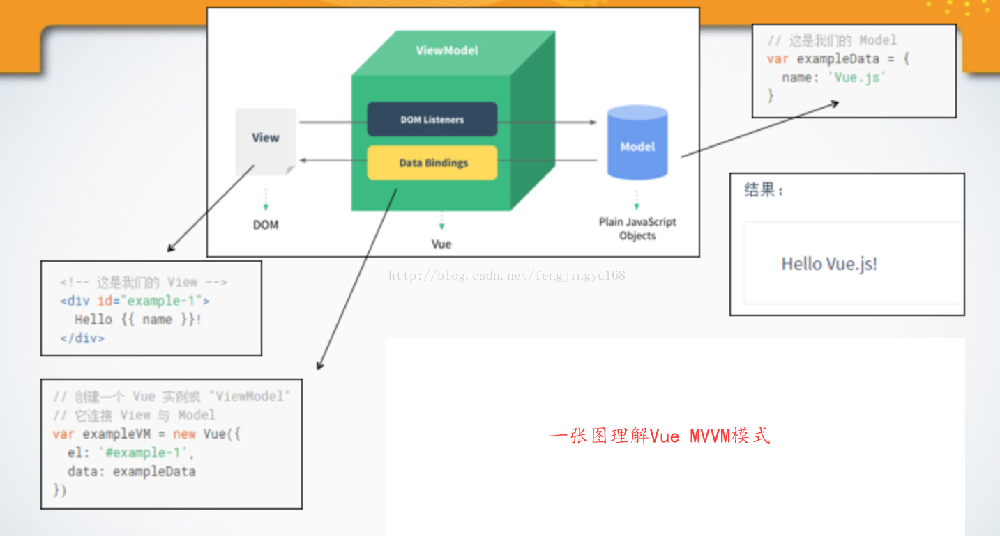
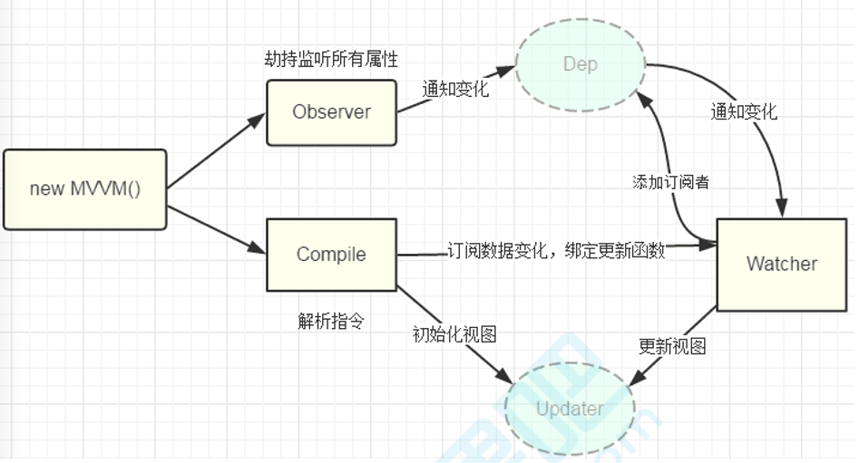

MVVM 模式
MVP --> MVVM 演变
-
在 MVP 中，更新视图需要 Presenter 层直接持有 View 层，并通过调用 View
层中的方法来实现，还是需要一系列复杂操作，
- Presenter 层直接持有 View 层导致了 Presenter 对 View 的依赖。使得 P V 和 耦合度增加
- 有没有什么机制自动去更新视图而不用我们手动去更新呢，所以，MVVM 模式应运而生。
- MVVM 模式将 Presenter 改名为 ViewModel，基本上与 MVP 模式完全一致。
-
唯一的区别是，MVVM增加了双向绑定（data-binding）机制：View的变动，自动反映在
ViewModel，反之亦然。
优缺点
-
优点：MVVM 模式的特征是 ViewModel 层和 View 层采用双向绑定的形式（Binding），View
层的变动，将自动反映在 ViewModel 层，反之亦然。
-
缺点：但是双向绑定给调试和错误定位带来困难，View 层的异常可能是 View
的代码有问题，也有可能是 Model 层的问题。数据绑定使得一个位置的 Bug
被传递到别的位置，要定位原始出问题的地方就变得不那么容易了。

binding：双向监听和订阅
- View 通过 ViewModel 订阅 Model 数据变化。Model 有变化时，ViewModel 会修改 View 的数据。
- View 的一些事件 如 input 在ViewModel （compile） 里被注册为发布者，ViewModel 订阅这些事件。
notify
- ViewModel 将 Model （就是 Vue 对象传入的 data 属性）劫持，注册为 发布者。并且将 View 的数据注册为订阅者。
- 当 Model 发生变化时，就发出通知，ViewModel 收到通知 （就是 执行View的订阅者函数，修改对应的 View 数据）
operate
- ViewModel 接收到 View 的事件信息，就去操作 Model 对应的数据（就是直接修改 data 属性下对应的属性）。
Vue 框架就是 MVVM 中的 ViewModel。
源码：vue-kkb
案例： vue-kkb index-2
MVVM 框架
-
MVVM（Model-View-ViewModel）是对 MVC（Model-View-Control）和
MVP（Model-View-Presenter）的进一步改进。
- 『View』：视图层（UI 用户界面）
- 『ViewModel』：业务逻辑层（一切 js 可视为业务逻辑）
- 『Model』：数据层（存储数据及对数据的处理如增删改查）
- MVVM 将数据双向绑定（data-binding）作为核心思想，View 和 Model 之间没有联系，它们通过 ViewModel 这个桥梁进行交互。
- Model 和 ViewModel 之间的交互是双向的，因此 View 的变化会自动同步到 Model，而 Model 的变化也会立即反映到 View 上显示。
- 当用户操作 View，ViewModel 感知到变化，然后通知 Model 发生相应改变；反之当 Model 发生改变，ViewModel 也能感知到变化，使 View 作出相应更新。
- MVVM 是 Model-View-ViewModel 的缩写。MVVM 是一种设计思想。Model 层代表数据模型，也可以在 Model 中定义数据修改和操作的业务逻辑；View 代表 UI 组件，它负责将数据模型转化成 UI 展现出来，ViewModel 是一个同步 View 和 Model 的对象。
- 在 MVVM 架构下，View 和 Model 之间并没有直接的联系，而是通过 ViewModel 进行交互，Model 和 ViewModel 之间的交互是双向的， 因此 View 数据的变化会同步到 Model 中，而 Model 数据的变化也会立即反应到 View 上。
- ViewModel 通过双向数据绑定把 View 层和 Model 层连接了起来，而View 和 Model 之间的同步工作完全是自动的，无需人为干涉，因此开发者只需关注业务逻辑，不需要手动操作DOM, 不需要关注数据状态的同步问题，复杂的数据状态维护完全由 MVVM 来统一管理。
一张图理解 Vue 的MVVM

在vue中：
- Vue就是基于MVVM模式实现的一套框架
- Model:指的是js中的数据，如对象，数组等等。
- View:指的是页面视图
- viewModel:指的是vue实例化对象
主流框架实现双向绑定（响应式）的做法：
- 脏值检查：angularangular.js 是通过脏值检测的方式比对数据是否有变更，来决定是否更新视图，最简单的方式就是通过 setInterval() 定时轮询检测数据变动，当然Google不会这么low，angular只有在指定的事件触发时进入脏值检测，大致如下： DOM事件，譬如用户输入文本，点击按钮等。( ng-click ) XHR响应事件 ( $http ) 浏览器Location变更事件 ( $location ) Timer事件( $timeout , $interval ) 执行 $digest() 或 $apply()在 Angular 中组件是以树的形式组织起来的，相应地，检测器也是一棵树的形状。当一个异步事件发生时，脏检查会从根组件开始，自上而下对树上的所有子组件进行检查，这种检查方式的性能存在很大问题。
-
观察者-订阅者（数据劫持）：vue Observer 数据监听器，把一个普通的 JavaScript 对象（model层）传给 Vue 实例（ViewModel层）的 data 选项，Vue 将遍历此对象所有的属性，并使用Object.defineProperty()方法把这些属性全部转成setter、getter方法（数据劫持，修改model数据，将model层数据设置为发布者，并且订阅model层数据变化）。当data中的某个属性被访问时，则会调用getter方法，当data中的属性被改变时，则会调用setter方法。Compile指令解析器，它的作用对每个元素节点的指令进行解析，替换模板数据，并绑定对应的更新函数，初始化相应的订阅（实现 View 与ViewModel 之间data-binding双向绑定的类。在compile中解析出View中的数据的时候为他添加一个订阅者，订阅Model的变化，当Model有变化时自动更新。同时input事件注册为发布者 ViewModel的某个函数订阅这个事件，当有此事件发生的时候，ViewModel就接收到数据并且修改Model数据，形成一个MVVM闭环）。Watcher 订阅者，作为连接 Observer 和 Compile 的桥梁，能够订阅并收到每个属性变动的通知，执行指令绑定的相应回调函数。Dep 消息订阅器，内部维护了一个数组，用来收集订阅者（Watcher），数据变动触发notify 函数，再调用订阅者的 update 方法。执行流程如下

从图中可以看出，当执行 new Vue() 时，Vue 就进入了初始化阶段，一方面Vue 会遍历 data 选项中的属性，并用 Object.defineProperty 将它们转为 getter/setter，实现数据变化监听功能；另一方面，Vue 的指令编译器Compile 对元素节点的指令进行解析，初始化视图，并订阅Watcher 来更新视图， 此时Wather 会将自己添加到消息订阅器中(Dep),初始化完毕。当数据发生变化时，Observer 中的 setter 方法被触发，setter 会立即调用Dep.notify()，Dep 开始遍历所有的订阅者，并调用订阅者的 update 方法，订阅者收到通知后对视图进行相应的更新。因为VUE使用Object.defineProperty方法来做数据绑定，而这个方法又无法通过兼容性处理，所以Vue 不支持 IE8 以及更低版本浏览器。另外，查看vue原代码，发现在vue初始化实例时， 有一个proxy代理方法，它的作用就是遍历data中的属性，把它代理到vm的实例上，这也就是我们可以这样调用属性：vm.aaa等于vm.data.aaa。